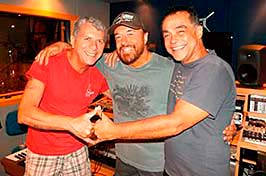
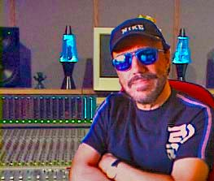
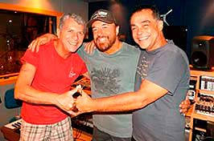
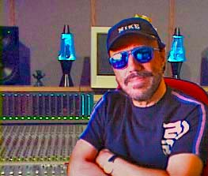

O QUE BUSCAMOS
Você acredita nas pessoas ou sites por aí que dizem fazer divulgação musical para gravadoras e produtores, e que nunca fizeram nada de importante no meio musical? A internet está lotada delas.
Como eles vão conseguir chegar na casa dos produtores, nos diretores de gravadoras e das novelas já que todos hoje em dia trabalham em sua própria casa?
Ninguém vai receber !!!No site Musikcity do produtor e maestro Hugo Bellard os cantores, bandas ou novos compositores vão encontrar um caminho direto para o meio musical.
Ao contrário de diversos sites, Hugo Bellard é detentor de diversos sucessos que são discos de ouro ou platina em que aparece como produtor, arranjador ou autor, em lançamentos das grandes gravadoras.
Nosso objetivo é utilizar os canais do maestro no meio musical para indicar novos talentos como cantores, bandas, compositores e letristas sem limite máximo de idade, através de encontros com parceiros para produção e divulgação dos talentos.
Se você se interessou e gostaria de trabalhar conosco preencha o formulário e venha!
 


